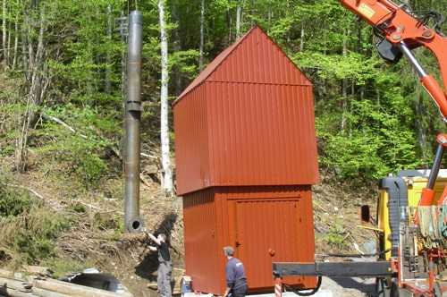

Aarholt-tunet Gjestegård og leirskole har en bevisst økologisk miljøprofil på stedet.
Økologisk landbruk og utvikling av lokalsamfunnet:
{kind=link}
Aarholt-tunet er også et gårdsbruk med ca 65 da jord og 300 da skog. Vi la om jordbruket til økologisk på slutten av 1980-tallet, og har et nært samarbeid med nabogården Solli gård om dette. Der driver de blant annet med økologisk melkeproduksjon.
På Aarholt-tunet er egne sauer, høner og grasproduksjonen økologisk.
{kind=link}
Gjestegården har et ønske om å tilby økologisk, fairtrade og kortreist mat. Det er stas å servere retter med egenprodusert mat. F.eks. "Knekkebrød med gulrotmarmelade".
Det sies nå at grenda med omkringliggende gårder hører til ett av de største "sammenhengende" økologiske arealer i landet !
Formidling av natur, kulturarv og miljøvern:
Aarholt-tunet har som forretningsidè å utvikle mennesker. Og vi bruker naturen helt bevisst til å skape gode samhandlings- og mestringsopplevelser.
Og da blir det også viktig å ta vare på naturgrunnlaget, og formidle hvordan tidligere generasjoner har vært avhengig av naturen for å overleve - slik vi faktisk også er idag !
{kind=link}
Og når elever på leirskole eller barn på bondegårdsferie spør om vi har "Skjerm" her, ser de ikke helt for seg hvordan de skal få en uke til å gå uten.
Men når uka er over forteller gjerne leirskoleelevene: "Jeg har savnet de hjemme, men jeg har ikke savnet mobilen min. Det har vært deilig å ha en pause fra skjerm-livet. Nå har jeg istedet for å holde på med mobilen fått nye venner og lært masse både om meg selv og hvordan jeg kan samarbeid med andre."
Gjenbruk:
{kind=link}
Noe av det som er sjarmerende på Aarholt-tunet, er gjenbruksfilosofien. Gamle tømmerhus er flyttet og brukt igjen. Også endel materialer, dører og møbler. De gamle husene er restaurert, og har sitt eget særpreg.
Det er en lett blanding mellom utstyr og inventar som må være nytt og det som kan være gammelt. Gamle ting har blitt kjøpt på loppemarked, auksjon eller i bruktbutikk - eller var på gården fra før.
Hvert rom/hus har sitt særpreg - ikke likt noe annet - og sitt "gårdsdyr" med billeddekor. F.eks. bor noen på "sauerommet" andre på "griserommet" eller "katterommet"....

Gjenbrukskrusene sparer miljøet for engangsemballasje. I tillegg er det alltid litt humor rundt hvilken kopp en vil velge og bruke gjennom dagen.
Solfanger på taket:

Aarholt-tunet har investert i en av de store solfangerne i landet; hele 145 m2 flate på låvetaket. Anlegget er koblet opp mot kjøkkenet i gamle-låven (forsamlingshuset) og varmtvann i 5 leiligheter, og kan kobles til flere hus ved behov. Akumulatortanken er anlagt i den gamle landkummen/gjødselkjelleren, og er på 6000 liter med 20 cm isolasjon rundt det hele. Håpet er at anlegget skal dekke det meste av varmtvannsforbruket vår, sommer og høst. Det er gitt noe støtte fra Enova til solfangerne.
Tømmerfyringsanlegg:
I 2010 investerte vi i den store fyrkjelen for biobrensel, - opprinnelig laget for brenning av store halm-baller, men tar også tømmer, ved, greiner mm. Anlegget er i drift fra 1 jan.2011 og leverer nå oppvarming og forbruksvann til husene på Gjestegården. Anlegget er dansk, og sees på www.alcon.nu
{kind=link}

Kjelen er på 130 KWh, og med 2 meter langt brennkammer og 1,25 m i diameter vil vi kunne hive innpå flere hundre kg. tømmer av gangen. Og fordelen med å brenne tømmer kontra ved er mindre arbeid med klyving. 315 m. preisolerte rør er gravd ned i bakken og ytterligere isolert på siden og over for å minske varmelekasjen til bakke.
Med svært kortreist energivirke fra egen skog, håper vi å spare opp mot ca 60-80000 KWh i året på dette av 180.000 kwt. Selv med bakgrunn i innkjøpspris for energivirke, regner vi med å komme ned i en KWh pris på 14 øre hvis en ikke regner avskrivning, renter og arbeid med fyringen.
Vi har fått nokså stor støtte fra Innovasjon Norge for å være et presentasjonsanlegg på energisiden.
Bygging av lydløse radiatorer på vegg:
Siden de gamle tømmerhusene ikke hadde vannbåren varme fra før av, holder vi nå på å bygge radiatorer av gulvvarmerør og aluminiums-lameller / kassetter. Disse er skrudd fast på lekter på veggen i endel av de store fellesrommene. En kassett på 20 cm x 2m står skrått ut fra vegg og 16 mm. gulvvarmerør er spent fast i disse. En veggflate på ca 1m x 2,40 vil da kunne inneholde 100m rør fordelt på ca 20 kassetter og vil kunne avlevere ca 4 KWh på 50 graders tur-vann og 45 gr. retur (200W pr kassett). Fronten av ovnene kan bekles med persienner/gardinlameller.
Vi valgte bort viftekonvektorer (vifteradiator) pga mulig lyd - OG levelengde på ovnene. Våre veggovner vil ikke ha noen bevegelige deler og er derfor "evigvarende", og de er utstyrt med termostat.
Utskifting av lyspærer:
Gjestegården har skiftet ut lyspærer for å spare energi. Selvom vi idag har miljøsertifikat på strøm gjennom Fjordkraft på 100 % fornybar energi, vil en besparelse i forbruket på energi kunne komme andre strømkunder til gode ved at de kan overta endel av det forbruket vi ikke lenger benytter.
Aarholt-tunet har skiftet ut alle 30 utelampene til LED-pærer som hver har et forbruk på kun 2 Watt pr. stk. Det betyr at 30 pærer ikke bruker mer enn èn 60watt lyspære ! Med lysende pærer halvparten av døgnets timer, vil strømforbruket pr. pære pr. år utgjøre en kostnad på 8 kr. Og allerede etter 1 - 2 år vil kostnadene med innkjøp og forbruk være innspart - selv i forhold til å ha ordinære sparepærer !
{kind=link}
{kind=link}
Søppelhåndtering:
Allerede i flere år har vi praktisert kildesortering, og har anskaffet et lite "miljøhus" for mellomlagring av søppel før kommunal henting eller egen bortkjøring. Også gjestene våre på bondegårdsferie - som har selvhushold - blir med på søppelsorteringen, selvom det for noen av dem er uvant fra sitt hjemmemiljø.